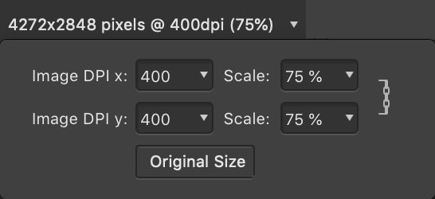

Placing content
Placing content allows you to add raster and vector images, as well as Affinity documents, PDFs, and PSDs, to your document's pages to enhance your publication.

Placing content allows you to add raster and vector images, as well as Affinity documents, PDFs, and PSDs, to your document's pages to enhance your publication.
A file of a supported file format can be dragged and dropped onto the page to place it.
Alternatively, multiple items can be loaded onto the Place panel and then placed, one at a time, in their top-to-bottom order from the panel or in any order you choose.
The selected item on the panel can be placed at its native dimensions or arbitrary dimensions by clicking or dragging in the document view, respectively.
When the Place panel is shown, the following settings are available on the context toolbar:
Once placed in your document, you have the option to replace the content, retaining its position, as well as edit placed content.
Many industry-standard file formats can be placed.
1 Multi-page Freehand files open with each page concatenated onto a single page. Add file extension .fh10 or .fh11 to import. Text import is not supported.
2 Raw images are processed automatically.
3 Supports transparency.
4 For iPhone images, the HEIC file may include an upsampled depth map, loaded as an editable second layer. For Canon EOS models (1 DX MkIII, R5 and R6), HIF files (HDR 10-bit PQ-encoded) are supported.
5 See Importing text for information about placing textual documents.
| Content type | Comments |
|---|---|
| Affinity Designer files with multiple artboards | You'll be provided with an Artboard option on the document's context toolbar so you can choose which artboard is displayed. |
| Affinity documents, PDFs and PSD files | The file will be listed in the Layers panel as either an Embedded document or Linked document depending on the Image placement policy set during initial Document Setup. |
| PSD files | A bitmap representation of the file will be displayed; the file content will not be interpreted. This will generally give better results on output and also negates the requirement to have correct fonts installed. You can still edit the layers of the placed PSD, although if edits are made the file will be interpreted again and its appearance may change (for example, if a font is missing). |
| PDFs, SVGs, PSD and EPS files | If these are placed as embedded documents, you can edit them within Affinity. If edits are made, these files will be converted to Affinity documents and the original data will not be retained; you will not be able to write the embedded file out to its native file format and make it linked. Other features such as using PDF Passthrough will also then be lost. Please note that the Resource Manager will always display the original file's source filename and location should you need to refer back to it. |
| Affinity documents, PDFs, SVGs, PSD and EPS files | If these are placed as linked documents, you will not be able to edit them directly within Affinity. However, any edits made to the files will be picked up by Affinity and will be reported as Modified in the Resource Manager. You can then use the Resource Manager's Update button to update the files to match the external changes that were made. |
| Multi-page Affinity documents, InDesign (IDML) documents or PDFs | When placing a multi-page document, from its entry on the Place panel, you can:
|
| Placed PDFs | These offer a PDF Passthrough option on the context toolbar, which defaults to Passthrough for exact reproduction within your own PDFs. If that's not possible, the Interpret option is selected and the Preflight panel lists the reason(s). A bitmap preview of the PDF’s contents is displayed while editing your document in Affinity Publisher. |
| Password-protected PDFs | Placing a password-protected PDF will prompt you to enter the file's password. The password is then requested whenever you open the parent document. When the parent document is exported, the resulting PDF does not have to be password-protected. If you wish to protect the exported PDF, ensure you set the required password(s) and restrictions on Affinity's Export dialog. |
| Placed PDF, DWG or DXF files containing layers | These offer a Layers option on the context toolbar, from which you can choose which of the placed file's layers are visible or hidden in your Affinity document. For example, a layer of a DWG or DXF file might contain notes or more technical information, such as component labeling, that you want to omit for a less technical audience. For PDFs, changing layer visibility will automatically set PDF Passthrough to Interpret. |
| Microsoft Excel Workbook spreadsheets (XLSX) | These can be placed directly in Publisher as tables. When placing, click on the page (instead of dragging) to preserve the original appearance of the file. |
